Primeros pasos
Viajapp funciona en el navegador, pero lo ideal es instalarla: queda en tu pantalla de inicio con el ícono del león y funciona aunque no tengas señal.
Instalar en el celular
- Abre viajapp-trip.web.app en tu celular.
- Android (Chrome): toca Instalar Viajapp en este celular en la pantalla de Inicio, o el menú ⋮ → Instalar app.
- iPhone (Safari): toca el botón Compartir y luego Agregar a pantalla de inicio.
Configurar tu viaje
- En Inicio, toca el botón de ajustes (arriba a la derecha) o la tarjeta de tu viaje.
- Escribe el nombre del viaje, las fechas y los participantes separados por coma.
- En Fondos y rendición anota cuánta plata les entregaron, la moneda y la entidad que entrega los fondos.
- Agrega a los responsables con su RUT. Puedes sumar todos los que necesites con + Agregar responsable: cada uno tendrá su línea de firma en la carta financiera.
- Si alguien es vegetariano, celíaco o tiene alguna alergia, toca Dietas y alergias (ver la sección Dietas y alergias).
- Toca Guardar.
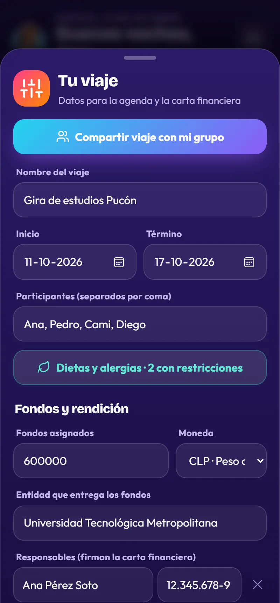
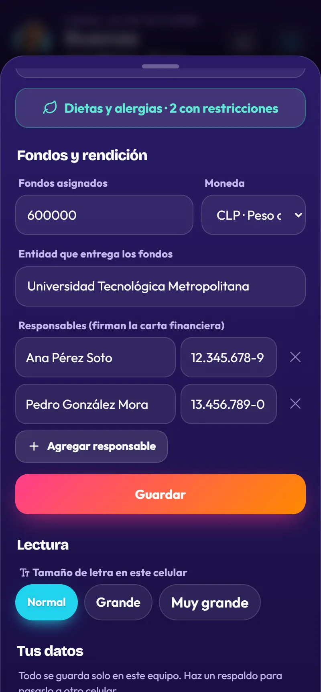
¿No sabes qué hacer? La app te guía
Pensada para que la use cualquiera, de 10 a 90 años, sin llenar la pantalla:
- Tu próximo paso: en Inicio aparece un solo paso a la vez con un botón grande (ponerle nombre al viaje, anotar quiénes van, invitar al grupo, elegir qué comprar, planear una comida y anotar un gasto). Al hacerlo, pasa solo al siguiente; cuando está todo, desaparece. Si te invitaron a un viaje, toca ¿Te invitaron a un viaje? Únete aquí. Si ya sabes usarla, toca Ya sé usarla, ocultar guía.
- Botón ? (arriba a la derecha): está en todas las pantallas y explica en 3 pasos cortos qué se hace ahí, con un enlace a esta guía. En Inicio también sirve para volver a mostrar la guía.
- Tamaño de letra: dentro del botón ? (o en ⚙️ Viaje) elige Normal, Grande o Muy grande. Cambia solo en tu celular.
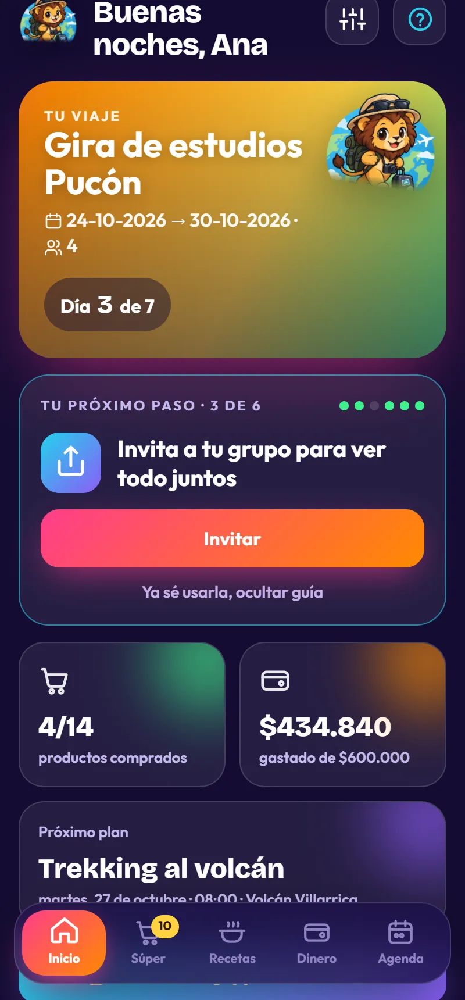
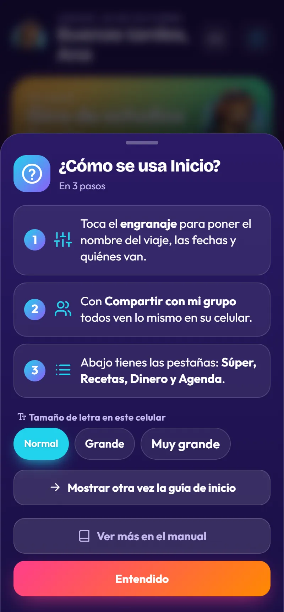
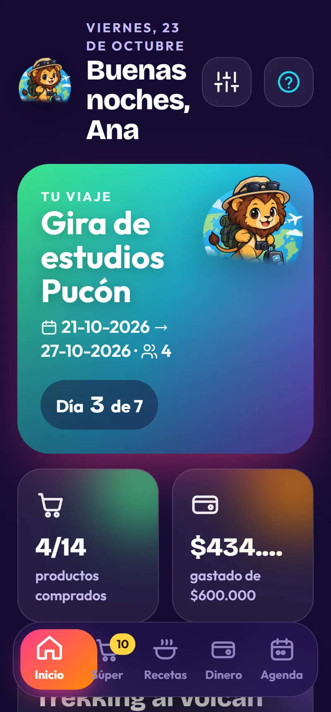
Inicio
Es el resumen de tu viaje: en qué día van, cuánto se ha comprado y gastado, y qué toca comer.
- Tarjeta del viaje: nombre, fechas, participantes y el contador "Día 3 de 7". Tócala para editar el viaje.
- Productos comprados y gastado de los fondos: tócalos para ir directo al Súper o a Dinero.
- Próximo plan: la siguiente comida o actividad de la agenda.
- Accesos rápidos: lista del súper, nuevo gasto, planear comida, dividir cuenta, carta financiera y recetas.
- Tu grupo: acceso a ¿Quién lleva qué?, Habitaciones y Bitácora, con un resumen de cada uno.
- Hoy: la línea de tiempo con las comidas del día y quién cocina.
Abajo siempre tienes la barra con los cinco módulos: Inicio Súper Recetas Dinero Agenda. El número amarillo sobre Súper indica cuántos productos faltan por comprar.
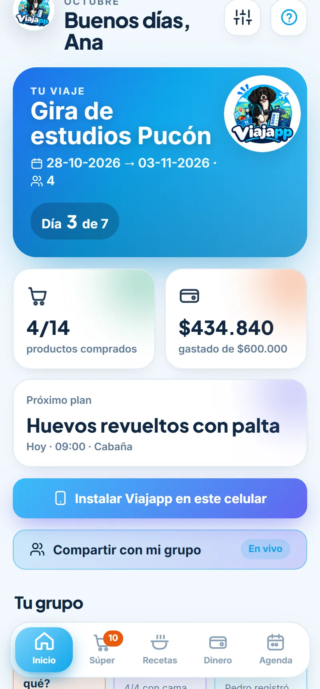
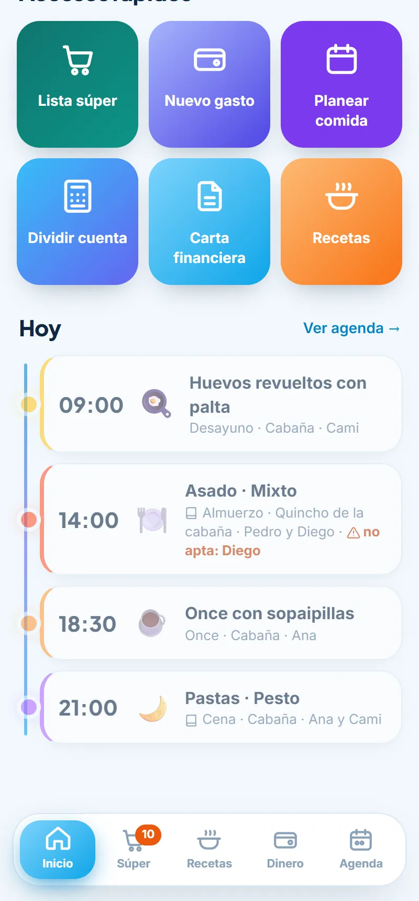
Súper: la lista de compras
Un catálogo con más de 200 productos ordenados por secciones (frutas, verduras, carnes, bebestibles, limpieza…) para armar la lista con toques, sin escribir.
Armar la lista
- En Catálogo, busca un producto o elige una sección en la fila de categorías.
- Toca un producto. Si tiene variantes (por ejemplo Aceite → Maravilla, Oliva, Canola…) se abre una hoja donde marcas una o varias y ajustas la cantidad con − +.
- ¿Buscas una marca o tamaño que no está? Escríbelo en ¿Otra variante o marca? y toca +.
- ¿No existe el producto? Usa Agregar producto al final de cada sección: queda guardado en el catálogo.
Ir de compras
- Toca Ver mi lista o la pestaña Mi lista.
- Marca cada producto a medida que lo echas al carro: la barra de progreso avanza y, al completar la lista, ¡hay confeti!
- Los productos que vienen de una receta muestran la cantidad exacta (por ejemplo 440 g) y el nombre de la receta.
- Lo que marcas como comprado entra solo a la Despensa.
- Al terminar, toca Registrar gasto para anotar la boleta en Dinero.
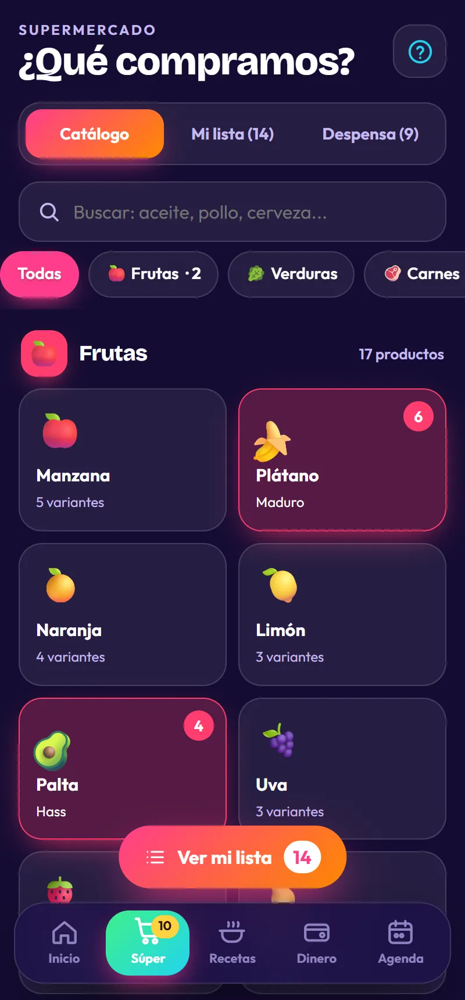
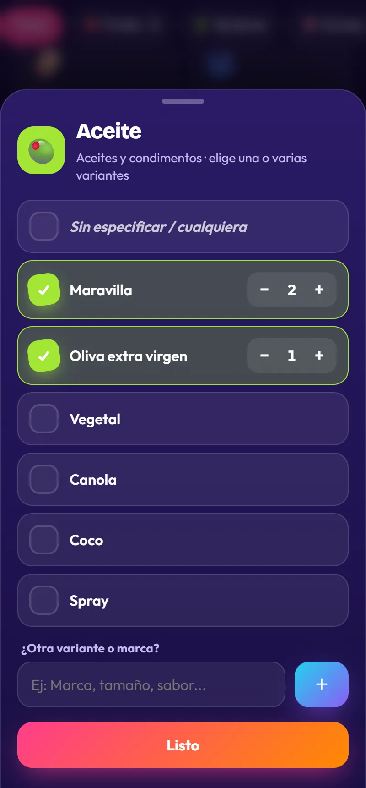
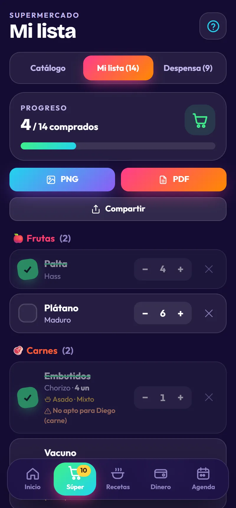
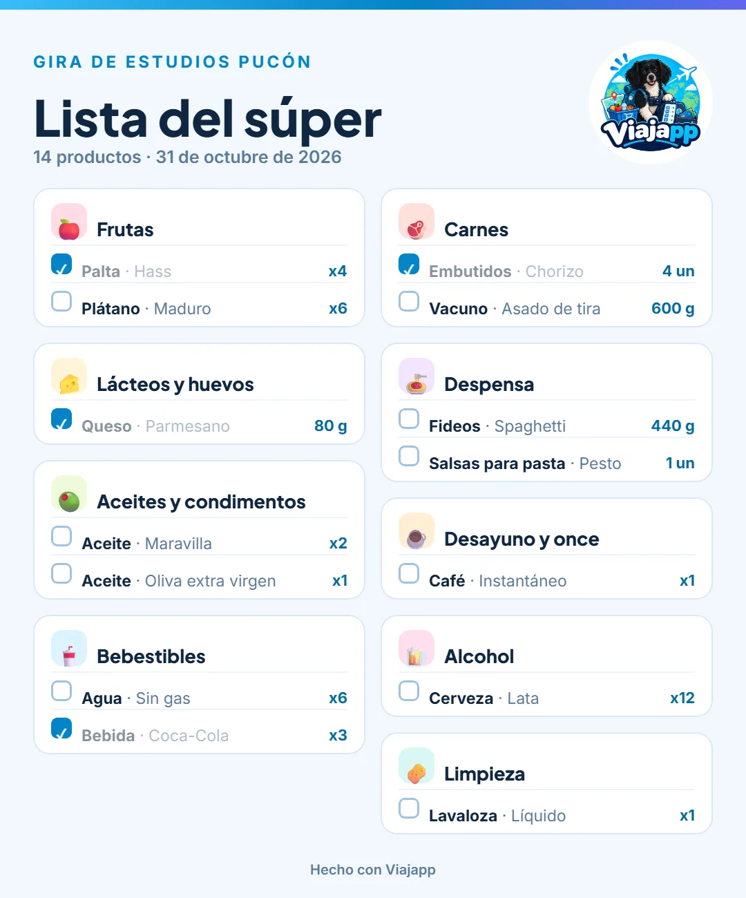
Despensa de la cabaña
Lo que hay en la cabaña, siempre al día. Evita comprar dos veces lo mismo (el clásico tercer aceite) y al final del viaje te dice qué sobró.
Cómo se llena sola
- Al comprar: cada producto que marcas como comprado en Mi lista entra a la despensa con su cantidad. Si lo desmarcas, se descuenta otra vez.
- Al cocinar: cuando marcas un plan de la agenda como Marcar como cocinado, se descuentan los ingredientes de su receta. Si te equivocas, Cocinado · deshacer los devuelve.
- Al planificar: cuando agregas una receta a la lista, lo que ya está en la despensa aparece como "en despensa" y no se vuelve a pedir. Si hay una parte, solo se pide lo que falta (por ejemplo "faltan 140 g").
Usarla a mano
- En Súper toca la pestaña Despensa.
- Para agregar algo que ya tenían (lo que trajo cada uno, por ejemplo), escribe el producto, la cantidad y la unidad, y toca +.
- Ajusta las cantidades con − +.
- Si algo se acabó, toca el carrito: sale de la despensa y pasa directo a Mi lista.
- Al final del viaje, Copiar sobrantes te da la lista para repartir lo que quedó por WhatsApp.
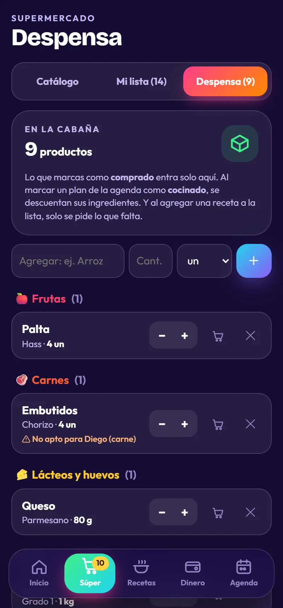
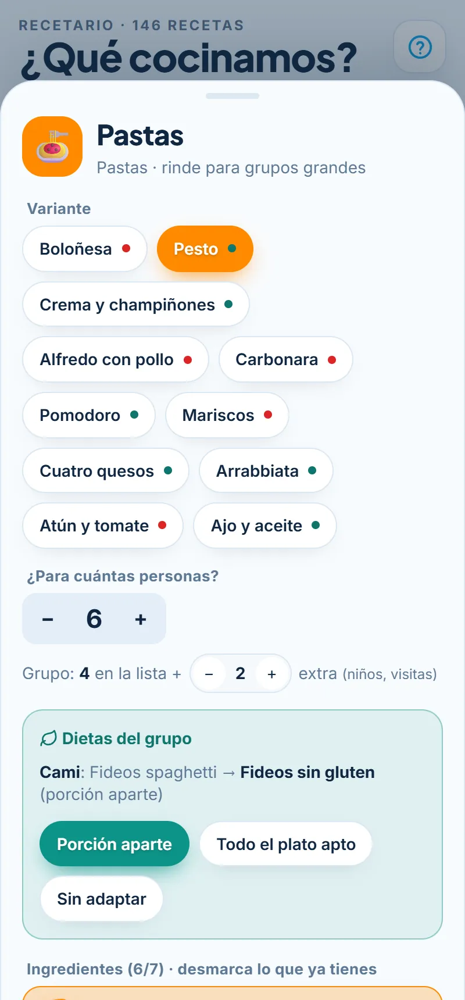
Recetas
120 recetas con más de 330 variantes en 18 categorías: cocina chilena (pastel de choclo, cazuela, curanto, caldillo de congrio, pastel de papas, plateada, mote con huesillo, calzones rotos…), Latinoamérica (tacos, arepas, ají de gallina, causa, feijoada, pollo a la brasa…), Asia (sushi, poke, pad thai, curry thai, teriyaki…), Europa y Mediterráneo (tortilla española, moussaka, quiche, shawarma, falafel…), además de pastas, asados, ensaladas, desayunos, onces, postres, tragos y picoteo. Elige qué cocinar y los ingredientes pasan solos a la lista del súper.
Cocinar una receta
- Busca (la búsqueda recorre todo el recetario) o elige una categoría y toca la receta. En "Todas" cada categoría muestra unas pocas recetas; toca Ver las N recetas para ver el resto.
- Elige la variante (por ejemplo, Pastas → Pesto).
- Indica para cuántas personas: las cantidades se recalculan solas.
- Desmarca lo que ya tienes (la sal, el aceite…). Lo que está en la despensa ya viene desmarcado ("en despensa") y lo que está en tu lista dice "en tu lista".
- Toca Agregar ingredientes a la lista, o Agendar para ponerla en el calendario.
Crear o modificar recetas
- Con el botón + creas tu propia receta: nombre, categoría, ingredientes base y variantes.
- Las cantidades se escriben por persona. Usa la unidad "fijo" para lo que se compra una sola vez, como sal o especias.
- Puedes elegir los productos del catálogo o escribir uno nuevo: se crea solo en el Súper.
- Puedes Editar receta en cualquiera de las incluidas sin perder la original: siempre está Restaurar original. También puedes ocultar las que no te sirvan.
- Tus recetas y las que modificaste aparecen en el filtro Mías, con una estrella.
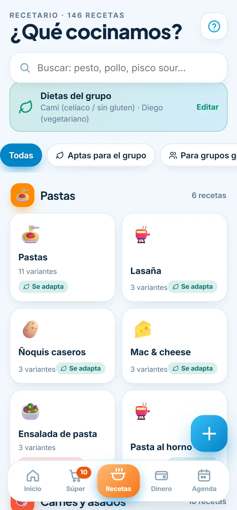
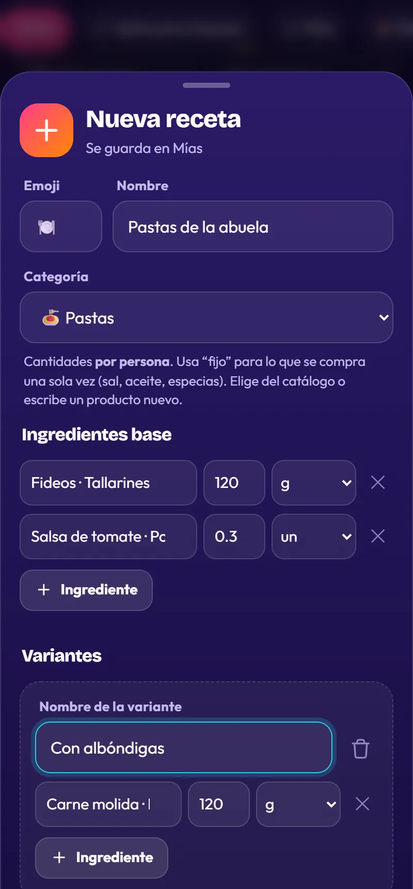
Dietas y alergias del grupo
Anota quién es vegetariano, celíaco, sin lactosa o alérgico a algo, y Viajapp lo tiene en cuenta en todas las recetas y en la lista del súper.
Configurarlas
- En la hoja del viaje (ajustes en Inicio) toca Dietas y alergias, o el aviso verde de arriba en Recetas.
- Para cada persona marca lo que corresponda: vegetariano, vegano, celíaco / sin gluten, sin lactosa, sin cerdo, alergia a mariscos, a frutos secos / maní, al huevo o no toma alcohol.
- Si hay algo más (por ejemplo "no le gusta el cilantro"), escríbelo en la nota.
Qué hace la app con eso
- En el recetario cada receta muestra si es "Apta para todos", si "Se adapta" con reemplazos o si "No apta" para alguien. El filtro Aptas para el grupo deja solo las que sirven.
- Al cocinar te explica qué cambiar. Por ejemplo: "Cami: fideos spaghetti → fideos sin gluten". Los puntos de color en las variantes indican cuáles funcionan para todos.
- Eliges cómo adaptar:
- Porción aparte: compra la versión apta solo para quien la necesita; el resto, la normal.
- Todo el plato apto: todos comen la versión adaptada.
- Sin adaptar: no reemplaza nada, solo avisa.
- Si algo no tiene reemplazo (por ejemplo, la carne del asado para alguien vegetariano), te avisa para que le prepares algo aparte.
- En la lista, los productos adaptados dicen "para Cami", y los que no sirven para alguien muestran un aviso.
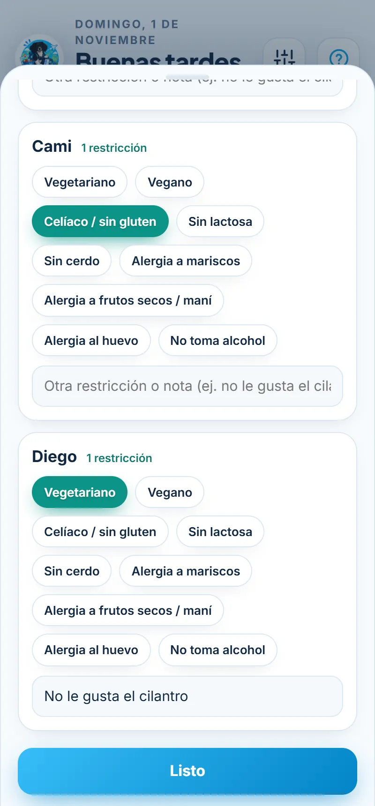
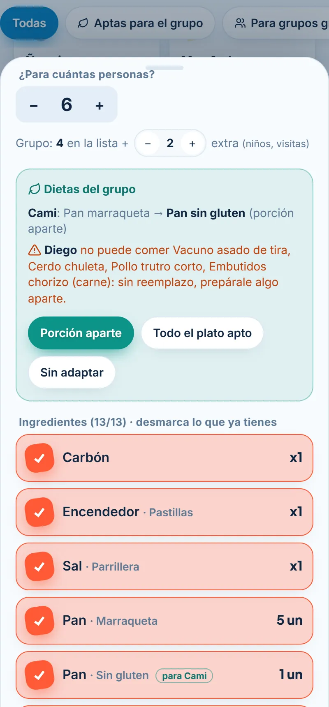
Dinero y carta financiera
Registra cada gasto con la foto de su boleta. Viajapp calcula el saldo, muestra en qué se va la plata, reparte las cuentas entre el grupo y arma la rendición para la entidad.
El resumen
- Saldo disponible de los fondos asignados y el anillo con el porcentaje usado. Si se pasan, la tarjeta lo avisa.
- ¿En qué se va la plata?: el gasto por categoría (alojamiento, súper, bar, transporte…).
- ¿Quién pagó?: cuánto ha puesto cada persona y el Fondo común.
- Movimientos: todos los gastos por día. Toca uno para editarlo.
Registrar un gasto
- Toca + (o Gasto).
- Escribe el monto, elige la categoría y una descripción.
- Indica el tipo de comprobante (boleta, factura, ticket) y su número.
- En Pagado por elige Fondo común si se pagó con la plata de la entidad, o la persona que lo pagó de su bolsillo.
- Toca Agregar foto para sacarle una foto a la boleta o elegirla de la galería.
- Guardar gasto.
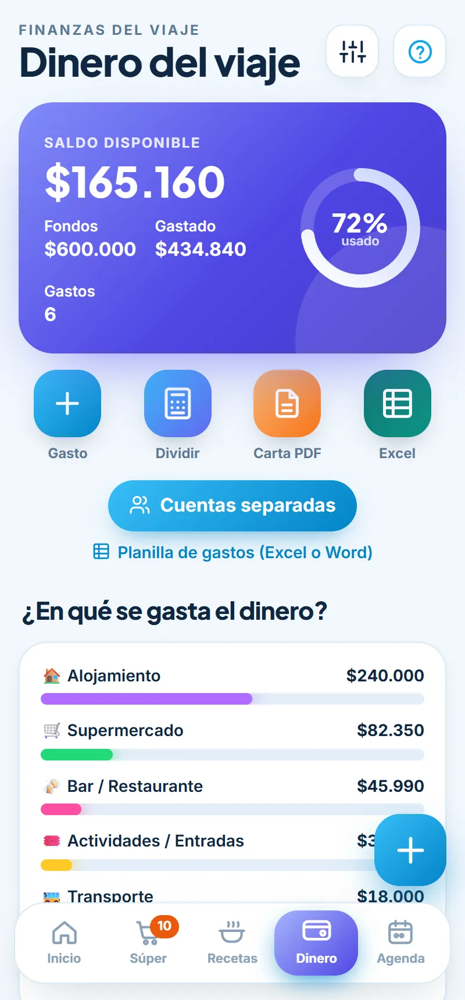
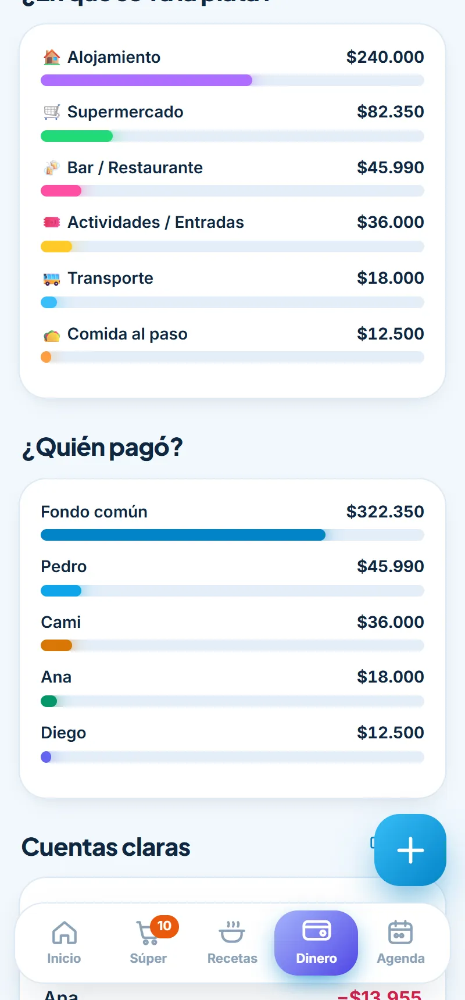
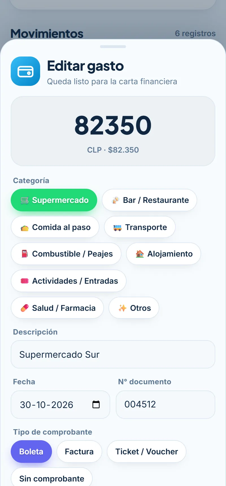
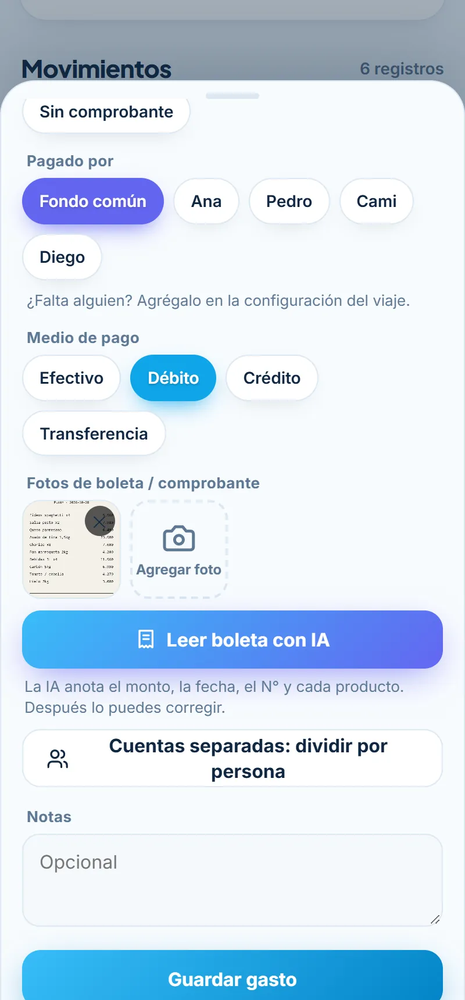
Dividir la cuenta
En el bar o el restaurante, toca Dividir: escribe el total, elige la propina y entre cuántos. Muestra cuánto paga cada uno y, con Registrar como gasto, queda anotado.
Cuentas claras: quién le debe a quién
Si alguien pagó algo con su plata, Viajapp reparte esos gastos en partes iguales entre los participantes y te dice las transferencias justas para quedar a mano (por ejemplo, "Diego → Pedro $15.623"). Lo pagado con el Fondo común no entra en este cálculo. Con Copiar lo pegas en WhatsApp.
Gastos solo entre algunos (opcional)
¿Las cervezas fueron solo de 3? En el gasto, bajo Pagado por, está ¿Entre quiénes se reparte?: por defecto dice Todos; toca solo a quienes participaron y verás cuánto le toca a cada uno. Cuentas claras cobra ese gasto solo a ellos y muestra su parte de cada persona. En Movimientos el gasto aparece con "entre 3", y el Excel trae la columna Repartido entre. Para volver a repartirlo entre todos, toca Todos.
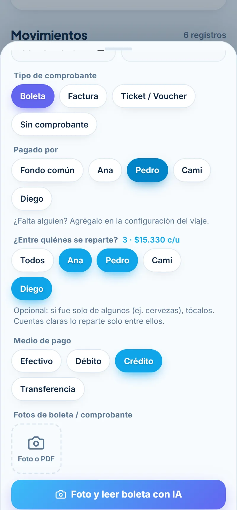
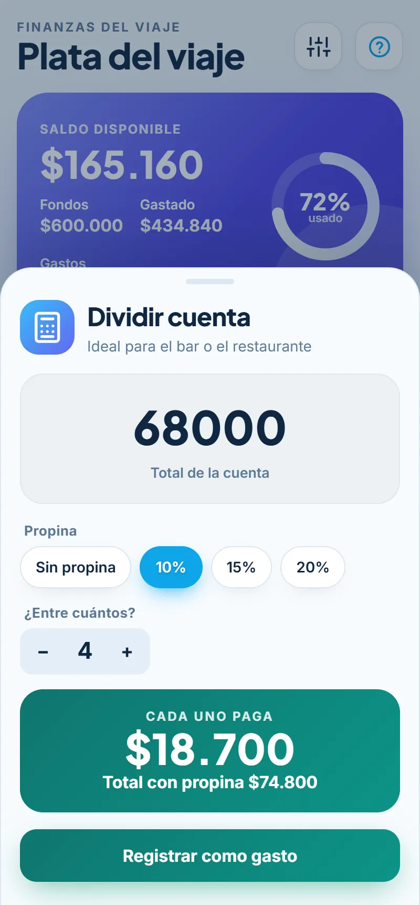
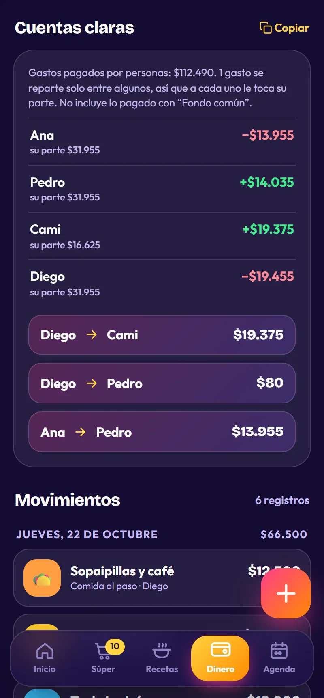
La carta financiera (rendición de gastos)
Toca Carta PDF y se genera un documento listo para entregar a la entidad. Incluye:
- Datos del viaje, la entidad, todos los responsables con su RUT y una carta formal de rendición.
- Fondos asignados, total rendido y el saldo a devolver (o el monto a reembolsar).
- El detalle de cada gasto con su comprobante y un resumen por categoría.
- Una línea de firma por cada responsable, más la de recepción de la entidad.
- Un anexo con las fotos de las boletas, numeradas igual que en el detalle.
Con Excel descargas los gastos en una planilla (CSV) por si la entidad la pide.
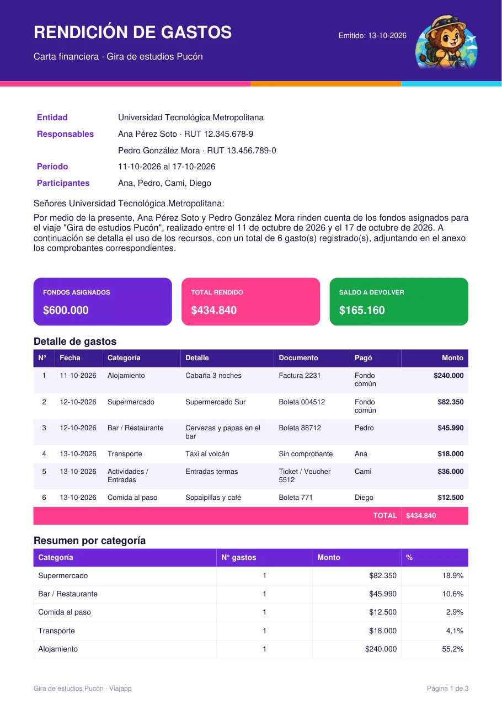
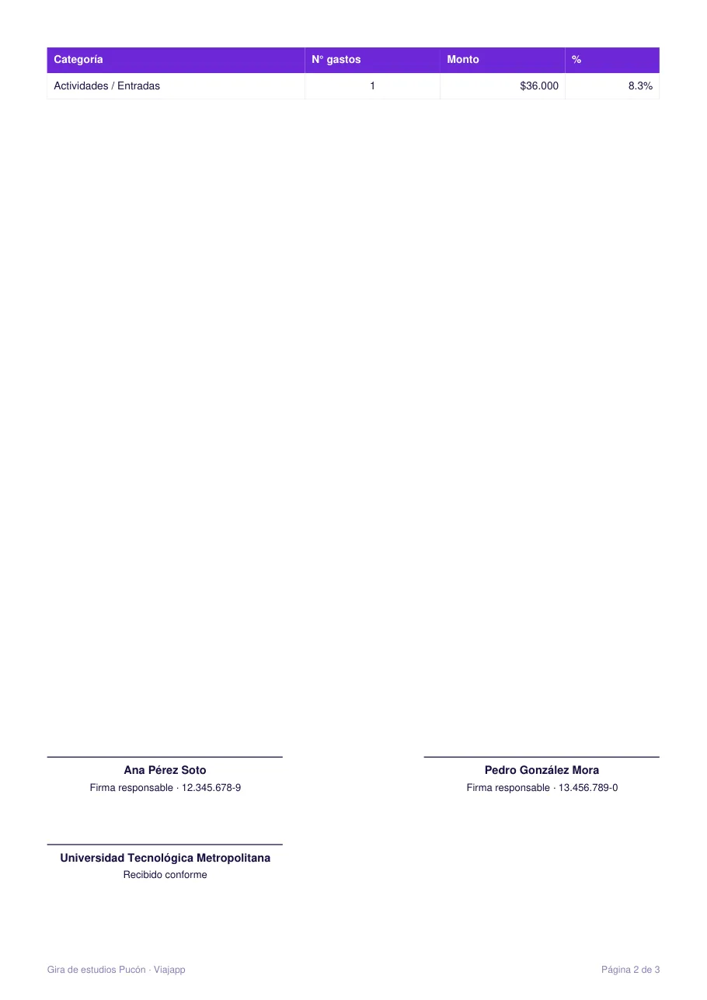
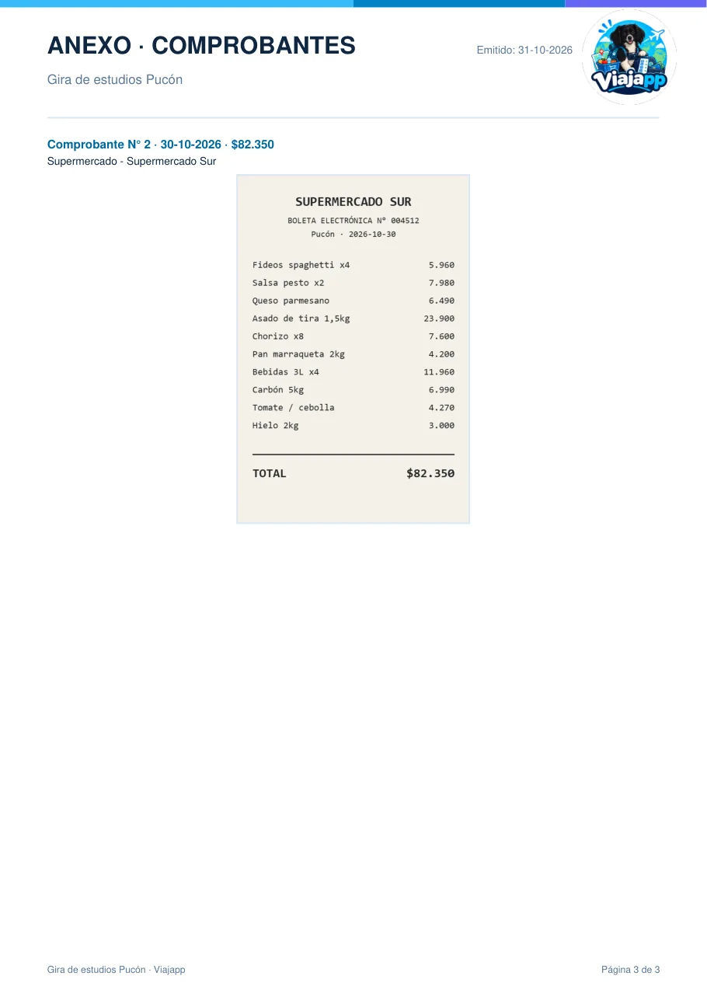
Agenda de comidas y planes
Organiza desayunos, almuerzos, onces, cenas, picoteos y actividades, con horario, lugar y quién se encarga.
- Elige un día en el calendario. Los días del viaje aparecen destacados y los puntos de colores indican qué hay planeado.
- Toca un tipo (Desayuno Almuerzo Once Cena…): la hora se sugiere sola.
- Escribe qué van a comer o hacer, el lugar y quién cocina.
- Toca un plan de la línea de tiempo para editarlo o eliminarlo.
El botón de documento (arriba a la derecha) exporta la agenda completa en PDF.
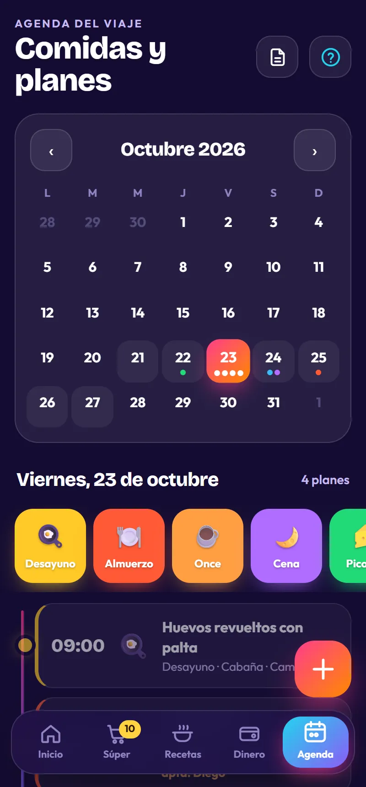
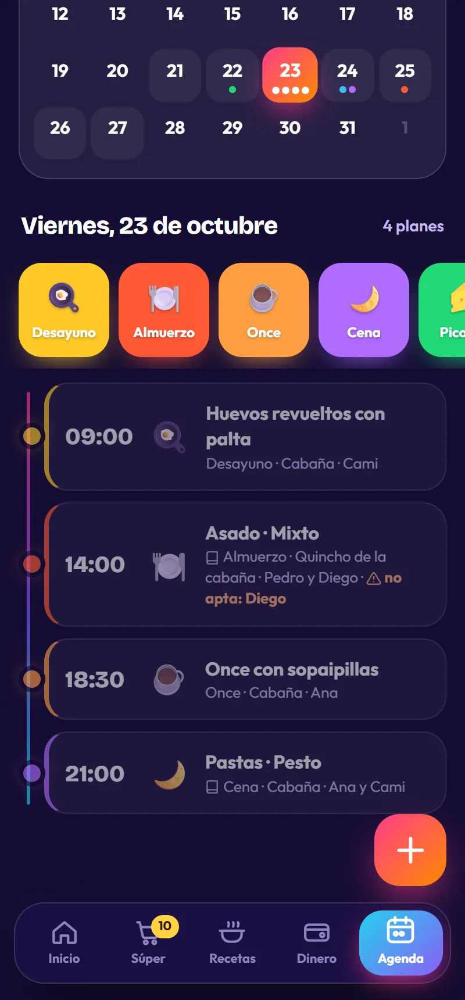
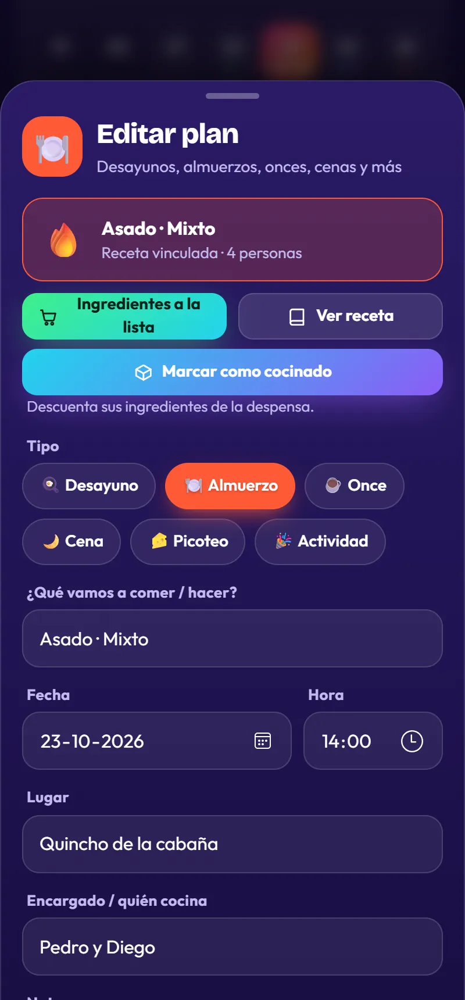
Tu grupo
Lo que organiza al grupo más allá de la comida y la plata. Se abre desde la tarjeta Tu grupo en Inicio y tiene tres pestañas: Cosas, Piezas y Bitácora. Con el botón de flecha vuelves a Inicio.
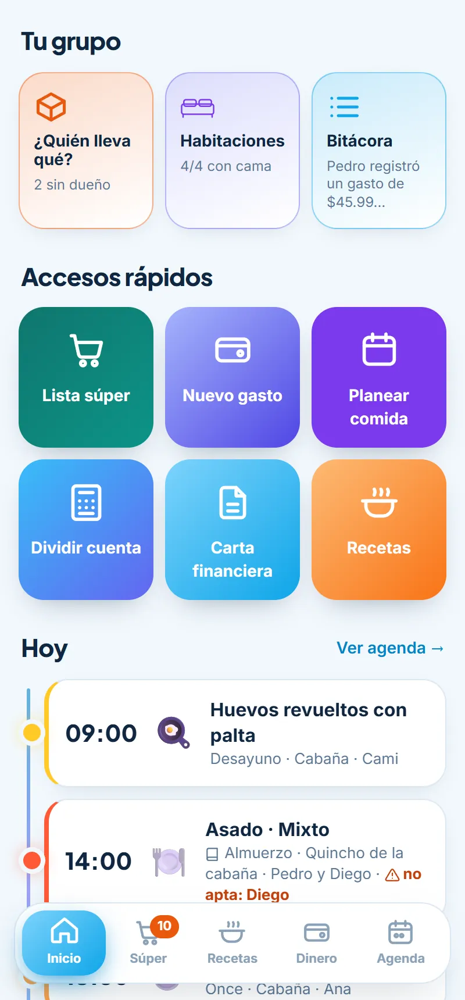
¿Quién lleva qué?
Para que no lleguen tres parlantes y ninguna olla.
- Agrega las cosas compartidas tocando las sugerencias (parlante, cooler, parrilla, juegos, botiquín…) o escribiéndolas.
- Cada uno toca Lo llevo yo en lo que va a llevar. Con el lápiz puedes asignarlo a otra persona, indicar la cantidad o dejar una nota.
- Lo que nadie ha tomado queda arriba en "Falta quien lo lleve".
- Al armar la mochila, marca cada cosa: el contador muestra cuántas están listas.
- Al terminar el viaje, cambia a Al volver: devoluciones y marca lo que ya volvió a su dueño. Así no se pierde nada.
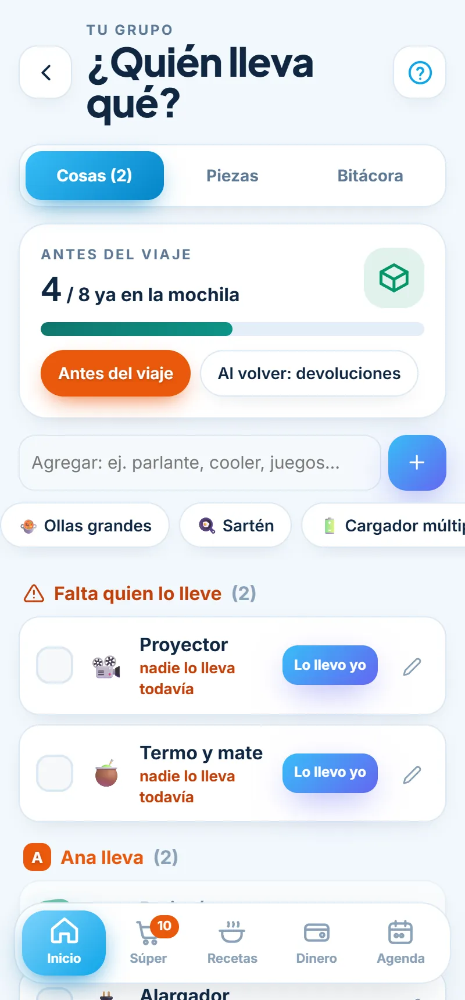
Habitaciones y camas
- Arma las piezas de la cabaña con + Pieza, o parte con Usar un ejemplo y ajústalo. Con el lápiz cambias el nombre y agregas o quitas camas: 2 plazas, single, litera arriba o abajo, sofá cama o colchón.
- En Juntos indica parejas o amigos que quieren dormir juntos.
- Toca Sortear camas: una ruleta reparte a todos. Las parejas quedan en la misma cama doble o en la misma pieza.
- ¿Alguien quiere una cama en particular? Tócala, elige a la persona y marca Fijar esta cama: los siguientes sorteos no la cambian.
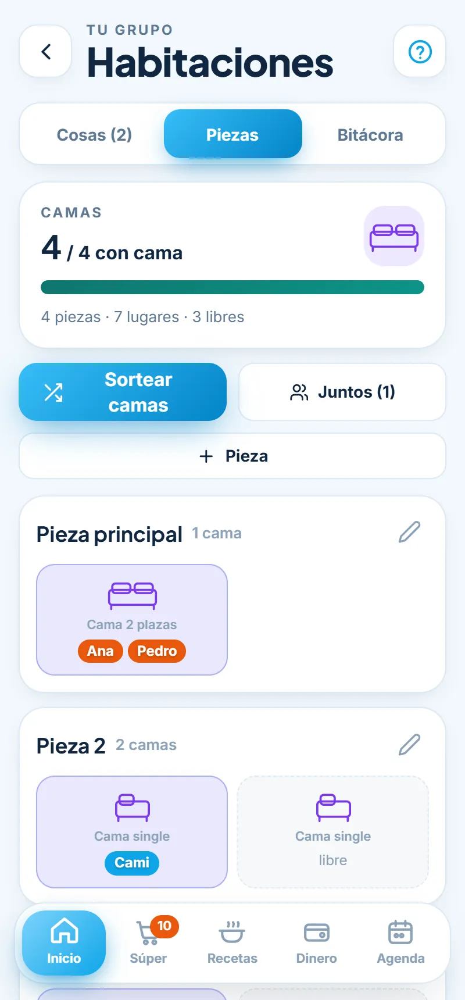
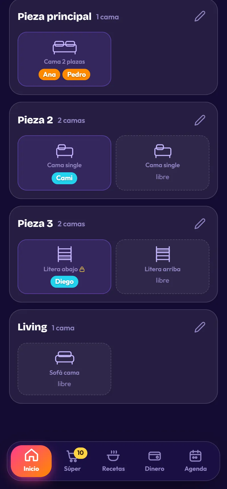
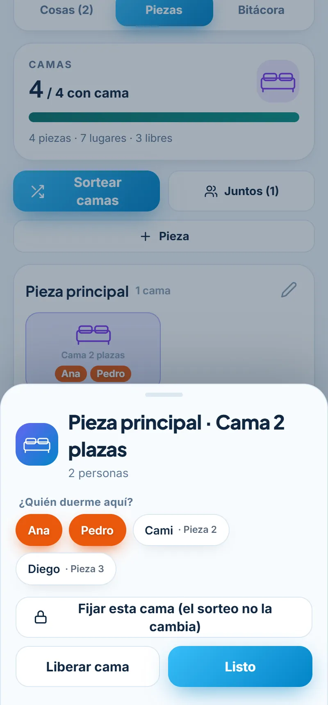
Bitácora del grupo
Un registro automático de lo que hace cada persona: "Pedro registró un gasto de $45.990", "Cami marcó 6 productos como comprados", "Ana sorteó las camas". Nadie tiene que anotar nada.
- Se registran gastos, compras, despensa, agenda, recetas, dietas, cosas y piezas.
- Las acciones seguidas se juntan en una línea para que se lea fácil.
- Puedes filtrar por módulo (Dinero, Súper, Agenda…) o por persona.
- Con el viaje compartido, cuando otra persona hace algo te llega un aviso en vivo arriba de la pantalla.
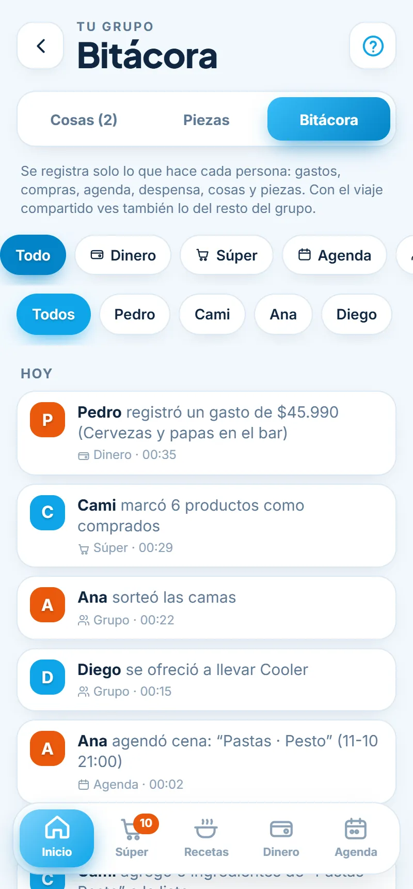
Viaje compartido
Todo el grupo ve lo mismo y en tiempo real: alguien marca "comprado" en el súper y los demás lo ven al instante. También se comparten los gastos con sus fotos, la agenda, las recetas, la despensa, las dietas, ¿quién lleva qué?, las piezas y la bitácora.
Crear el viaje compartido (una sola persona)
- En Inicio toca Compartir con mi grupo.
- Escribe tu nombre y toca Crear viaje compartido. Se suben los datos que ya tenías.
- Aparece un código QR y un enlace: muéstralo o envíalo por WhatsApp con Compartir.
Unirse (el resto del grupo)
- Abre el enlace o escanea el QR con la cámara. Se abre la hoja Te invitaron a un viaje con el código ya puesto (crear uno propio queda abajo, como alternativa).
- Escribe tu nombre y toca Unirme al viaje. ¡Listo!
- Si tu celular ya estaba en otro viaje compartido, aparece Cambiarme al viaje nuevo: sales del anterior y entras al que te invitaron.
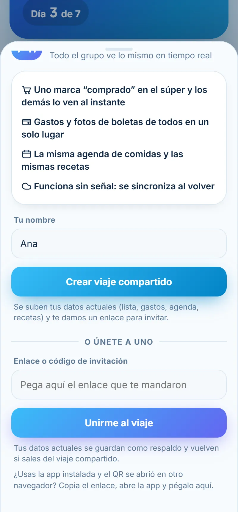
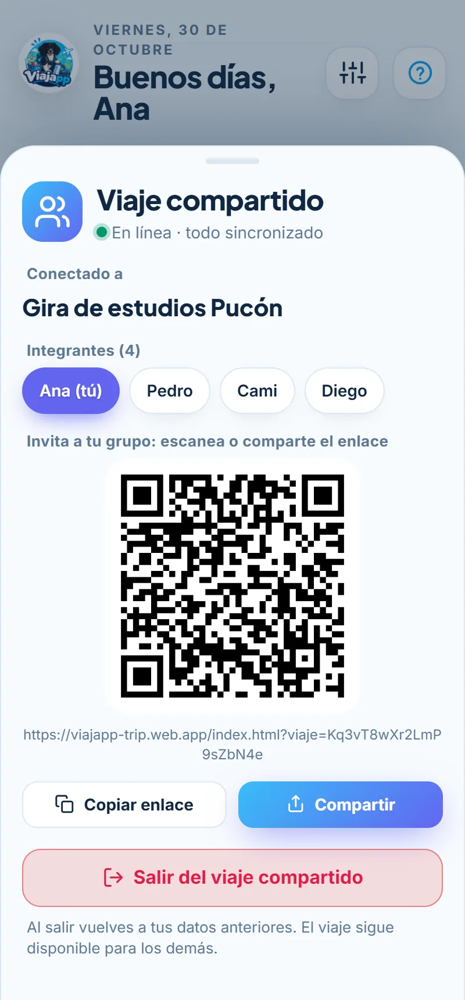
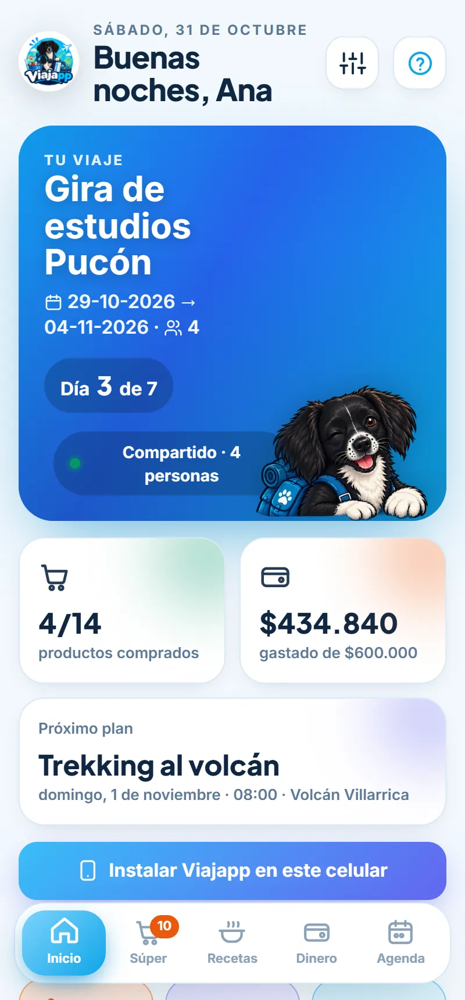
Tus datos
Si no usas el viaje compartido, todo se guarda solo en tu celular. En la hoja del viaje (botón de ajustes en Inicio) tienes:
- Respaldo: descarga un archivo con todo (lista, gastos con fotos, agenda y recetas) para guardarlo o pasarlo a otro celular.
- Restaurar: carga un respaldo.
- Borrar todo: deja la app en blanco (pide confirmación con un segundo toque).
- Manual de uso: abre esta guía.
Preguntas frecuentes
¿Necesito internet para usar Viajapp?
No. Una vez abierta (o instalada), funciona sin conexión. Solo necesitas internet para crear o unirte a un viaje compartido; después los cambios se sincronizan cuando vuelve la señal.
¿Se pierden mis datos si cierro la app?
No, todo se guarda al instante en tu celular. Si estás en un viaje compartido, además queda respaldado en la nube para todo el grupo. Si vas a borrar la app o cambiar de celular sin viaje compartido, haz antes un Respaldo.
¿Cómo agrego a alguien que no aparece en "Pagado por"?
Agrégalo en Participantes, dentro de la hoja del viaje (botón de ajustes en Inicio), separado por coma.
¿Qué diferencia hay entre "Fondo común" y una persona?
"Fondo común" es la plata que entregó la entidad: se descuenta del saldo pero no entra en Cuentas claras. Si una persona paga de su bolsillo, ese gasto se reparte entre todos (o solo entre quienes elijas en "¿Entre quiénes se reparte?") para calcular quién le debe a quién.
Algo lo compraron solo algunos, ¿cómo lo anoto?
Registra el gasto normal y, en "¿Entre quiénes se reparte?", toca solo a esas personas. Cuentas claras se lo cobra solo a ellas; al resto no le cuenta.
¿Puedo poner más de un responsable en la carta financiera?
Sí. En la hoja del viaje, en Responsables, toca "Agregar responsable" las veces que necesites. Todos aparecen en la carta con su RUT y su propia línea de firma.
Agregué una receta y las cantidades son muchas o pocas
Las cantidades dependen de las personas elegidas. Cambia el número en "¿Para cuántas personas?" antes de agregar, o ajusta la cantidad después en Mi lista con los botones − y +.
¿La despensa se actualiza sola?
Sí: suma lo que marcas como comprado y descuenta lo que cocinan cuando marcas un plan con receta como "cocinado". Lo que traigan de sus casas o lo que se use sin receta lo ajustas a mano con − y +.
Alguien del grupo es celíaco o vegetariano, ¿qué hago?
Anótalo en Dietas y alergias. Las recetas te dirán cuáles sirven para todos y cuáles se pueden adaptar, y al agregar una receta se compra solo para esa persona la versión apta (por ejemplo, fideos sin gluten).
La app dice "sin reemplazo", ¿qué significa?
Que ese ingrediente no tiene una versión apta en el catálogo (por ejemplo, la carne del asado para alguien vegetariano). Prepárale una alternativa: puedes buscarla en el filtro "Aptas para el grupo".
¿El sorteo de camas es justo?
Sí: es al azar cada vez. Solo respeta lo que ustedes definan: las parejas de "Juntos" y las camas fijadas. Si no les gusta el resultado, sorteen de nuevo o ajusten a mano.
¿Quién puede ver la bitácora?
Todos los integrantes del viaje compartido. Sin viaje compartido, solo registra lo que haces en tu celular.
Me uní con el QR pero no veo el viaje del grupo
Revisa dos cosas. 1) Abre Viaje compartido y mira Conectado a: si dice otro viaje, abre de nuevo el enlace y toca "Cambiarme al viaje nuevo". 2) Si tienes la app instalada, el QR a veces se abre en otro navegador (el de la cámara o Safari en iPhone), que guarda sus datos aparte: copia el enlace, abre la app instalada y pégalo en "Enlace o código de invitación".
Las letras se ven muy chicas
Toca el botón ? arriba a la derecha y elige "Grande" o "Muy grande" en Tamaño de letra. Se guarda en tu celular.
Oculté la guía de inicio y la quiero de vuelta
En Inicio toca el botón ? y luego "Mostrar otra vez la guía de inicio".
En iPhone no veo el botón "Instalar"
En iPhone se instala desde Safari: botón Compartir → "Agregar a pantalla de inicio".